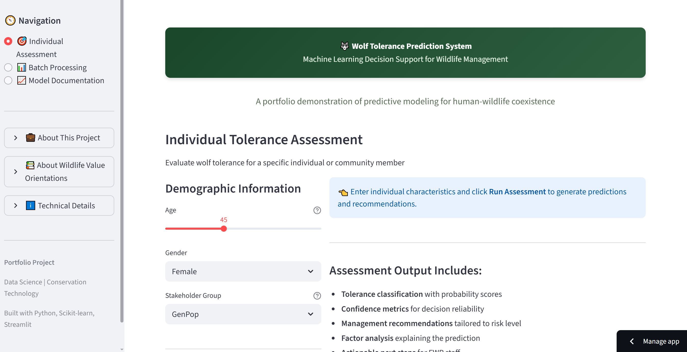
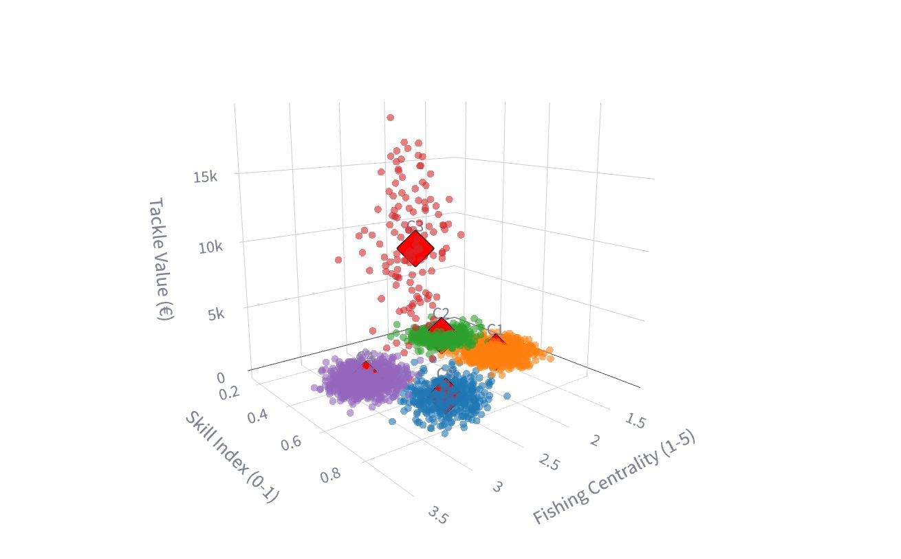

Modeling & Machine Learning
Predictive modeling, regression, and advanced statistical techniques in Python and R to uncover key drivers and forecast outcomes.
Longitudinal statewide survey analysis using Python · SQL · Tableau with survey weighting and reproducible reporting. This interactive study highlights shifts among residents, hunters, and landowners across three survey waves.

Predictive modeling, regression, and advanced statistical techniques in Python and R to uncover key drivers and forecast outcomes.
SQL and Python for building reproducible workflows, cleaning and transforming large datasets, and integrating multi-source data.
Communicating results through Tableau dashboards and custom visualizations (Matplotlib, ggplot2) for both technical and non-technical audiences.
PhD-level expertise in survey design, weighting, and behavioral modeling—applying rigorous methods to understand human decision-making.
Over a decade, Montana surveyed residents about wolves—tolerance, hunting, trust, and impacts. By 2023, the instruments and files didn’t line up: different schemas, overlapping IDs, shifting labels. This project rebuilt the data into a single, comparable record and delivered weighted, presentation-ready trends leaders could use.
Approach: co-design the latest wave for comparability → harmonize legacy files into a canonical layout → fix duplicates and standardize fields in SQL → apply weights and generate faceted charts and a briefing deck in R.
Outcome: a reproducible pipeline with code-backed visuals showing how tolerance for wolves and tolerance for wolf hunting moved across groups and time.

The 2023 questionnaire was co-designed to match 2012/2017 on the things that matter—strata, weights, and key constructs—so trends compare cleanly.

Four SPSS files, four schemas. The notebook reads each one, standardizes names, creates a shared household key, and adds license flags—so analysis starts from one table, not four.
Prior waves aren’t identical. This step maps 2012/2017 to a canonical 2023 layout, tags each record with its wave,
logs any mismatches, and exports a clean MasterData table.

Some respondents appear more than once across years and groups. A simple, transparent rule keeps the right record, standardizes fields, and enforces ID integrity.
Counts by wave and strata, early looks at tolerance and trust, and sanity checks on group composition—fast signals before full modeling.

Weights make each group count correctly. Code draws faceted charts with error bars and exports both a slide deck and a PNG set from the same script.

Stakeholder-ready slides that pull in the weighted visuals and key notes, built directly from code for easy updates.

The formal write-up for leadership and public audiences, summarizing the longitudinal findings and context.

Interactive ML app that predicts tolerance toward wolves from survey inputs. Built with Python and Streamlit.

Unsupervised ML app clustering German anglers based on centrality, skill, and behavioral commitment. Built with Python and Streamlit.

Used a stratified mail survey of 5,350 Montana residents (n = 1,758, weighted sample) and structural equation modeling (SEM in R/lavaan) to test how hunter vs. nonhunter identities moderated the effects of vicarious experiences and emotions on attitudes and acceptance of grizzly bears.

Used a three-level random-effects meta-analysis (172 effect sizes, 23 studies) with subgroup analyses and publication bias tests to quantify how catch and non-catch factors shape recreational angler satisfaction.

Analyzed 19,500+ fishing trips across contrasting governance systems in Germany to show how catch rates, fish size, and social-ecological context drive angler satisfaction, using statistical modeling to reveal non-linear effects and context-specific differences
I’m always open to discussing data science opportunities, collaborations, or how data can be applied to solve real-world problems and drive impact.